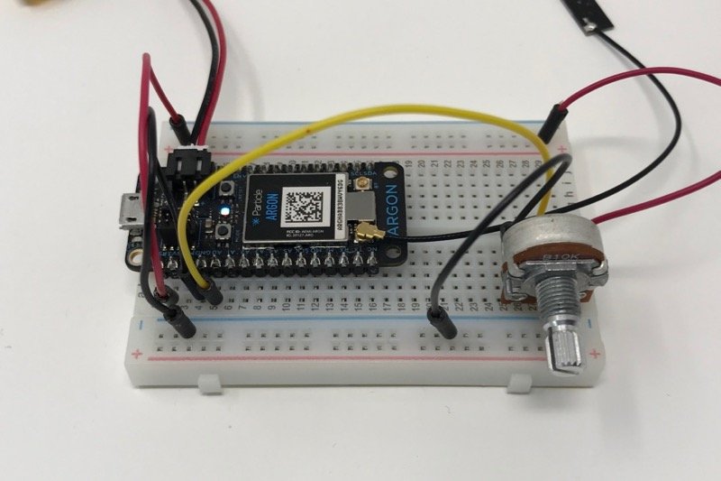
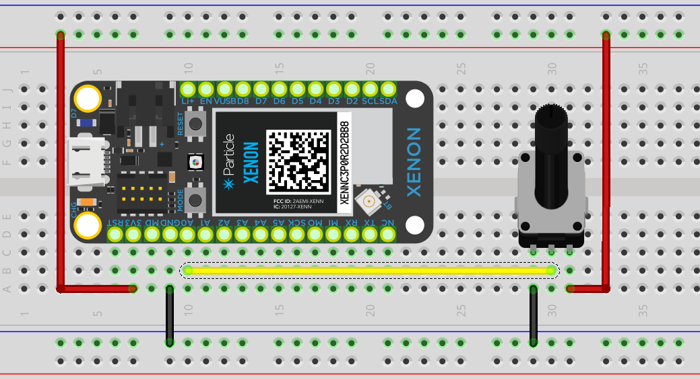

This is the BLE Potentiometer example. It allows a Gen 3 device to communicate directly with your web browser if you have:
Here's a video of it in action. Note the green bar at the top of the screen change levels as the potentiometer is turned.

Here's the circuit drawn in Fritzing:

Here's the code to flash to your Gen 3 device (Argon, Boron, or Xenon). Note that this requires Device OS 1.3.0 or later to have BLE support.
#include "Particle.h"
SYSTEM_MODE(MANUAL);
const BleUuid serviceUuid("4677062c-ad02-4034-9abf-98581772427c");
const BleUuid valueUuid("dc13b36a-3499-46b0-ac11-5ac0173c4cc5");
BleCharacteristic valueCharacteristic("value", BleCharacteristicProperty::NOTIFY, valueUuid, serviceUuid);
const int ADC_PIN = A0;
const unsigned long UPDATE_PERIOD_MS = 100;
unsigned long lastUpdate = 0;
void setup() {
Serial.begin();
BLE.addCharacteristic(valueCharacteristic);
BleAdvertisingData data;
data.appendServiceUUID(serviceUuid);
BLE.advertise(&data);
}
void loop() {
if (BLE.connected()) {
if (millis() - lastUpdate >= UPDATE_PERIOD_MS) {
lastUpdate = millis();
uint8_t data[1];
// ADC value is 0-4095 (12 bits) but only put 8 unsigned bits in the data
// as we don't need the resolution and it avoid dealing with byte order issues.
data[0] = analogRead(ADC_PIN) >> 4;
valueCharacteristic.setValue(data, sizeof(data));
}
}
}
It uses SYSTEM_MODE(MANUAL) (no cloud connection), so to remove it you'll need to flash code over USB or use Safe Mode (blinking magenta) to flash new firmware OTA.
Click the Start button at the top of the page to begin. You'll be prompted for the device to connect to and then the meter should start updating!